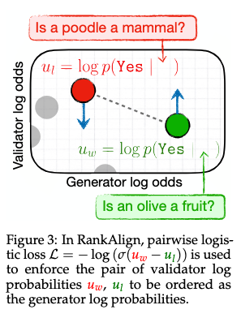
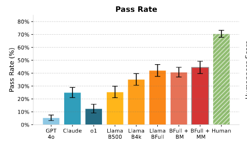
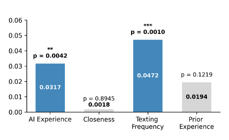
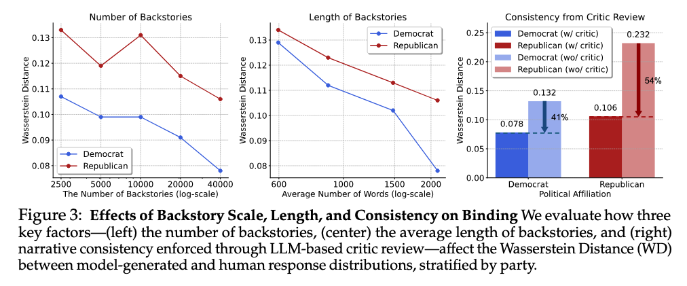

COLM was a blast!
Some interesting papers
First, I’ll give a rundown of a few cool posters I checked out---rather than giving a comprehensive overview I’m giving my takeaways. Hopefully that gives you a taste of whether each is worth reading for you.
Modifying and improving models
While my interest in academic basic R&D on building/modifying models continues to wane, I nonetheless am always excited to see work that improves some fundamental weakness of open models with a simple approach.
The lack of long-context reading for useful tasks is understudied imo. One group doing lots of great work both in evaluating and now fixing long-context weaknesses is Mohit Iyyer’s at UMD. Despite strong and simple “needle in a haystack” results (see TechCrunch interview with that group’s former postdoc Marzena Karpinska and myself on this issue) even frontier LMs fail to generalize to basic long-context tasks such as finding easy information in long, unrelated context, or answering simple questions about long texts such as novels. Last year they introduced NoCha, a benchmark which actually assesses this by checking if an LM can answer basic minimal pair questions about the text, a task called narrative claim verification.
CLIPPER from Chau Minh Pham (UMD) introduces a simple data augmentation technique based on compression to fine-tune oepn models to be better on this task.

Using an chapter-by-chapter outlines and book-level outlines they use LLMs to generate True and False claim pairs. This “compression”-based approach is then verified at small scale by human annotators, to find that 83% of generated claims are completely error-free, an absolute improvement of 66% over the prior SOTA in this form of data generation. While it would be inappropriate to use such noisy data for evaluation, for training it’s much better than nothing, and 34x cheaper per sample than human annotators (used to make NoCha).
Using this augmented data they construct an SFT training set to fine-tune open Qwen, Llama, and ProLong models. This process doubles the performance of the tested models on the hardest NoChat dataset, and improves performance on NarrativeQA, MuSR, and their test set considerably. Although prior results showed that short-context claim verification data does also improve long-context, it probably shouldn’t be a surprise that their long-context data improved model performance more.
That being said, at the poster Chau told me she was a bit surprised that their data didn’t improve performance more. I wonder if more denoising and bumping up that 83% correct claim rate would help here?
RankAlign from Juan Diego Rodriguez and Wenxuan Ding (UT Austin) was another neat paper on improving models that does something refreshingly simple to address the “generator-validator gap” (GV gap) in LMs.
The GV gap refers to an LM failing to bidirectionally reflect knowledge---for example, generating Olives are a type of fruit, but answering no to are olives a type of fruit?.
They formalize the GV gap using logprobs. Given the logprobs of a word’s category membership and the logprobs of the category answer given the “are a type of” prompt, calibration represents a better correlation.

Motivated from this framing they present a simple remedy: pairwise contrastive loss. Look at two (word, category) pairs. If the correlation relation is backwards, push them the other way!

This method improves performance on a few QA tasks while considerably improving the GV gap issue.
Personas
I used to be really incredulous about using LMs to simulate people, but I now think techniques in this space are both promising for metrology but also present peril. I want to highlight three papers in this space presenting the feasibility and risks of realistic, consistent personas.
IMPersona from Ben Shi (Princeton) was an awesome and scary paper. They trained LMs on real chat logs submitted by participants in order to impersonate them, and then tested these personally finetuned models on a friends and family turing test where additional participants who actually know the submitting participants had to guess if the bot was their friend or not.

Shockingly, these finetuned Llama models passed this test 44% of the time! A personalized LMs could trick your friends! Is all hope lost? Well, they checked for a few relationship variables which may predict whether an LM could impersonate you to someone else.

The best protective attributes are texting frequency and AI experience. It does not matter how “close” you are to the person, but how often you text, and how experienced they are with AI. As the presenter put it to me, “grandparents are the most likely to get fooled.” You better start texting grandma more!
In Deep Binding of Language Model Virtual Personas Minwoo Kang and Suhong Moon (UCB) the authors tackled the problem of mode collapse in simulating political poll participants (note: I really hate this application for LMs; we should be doing social science by talking to humans. But, I see other important applications for the techniques presented here.)
Rather than eliciting a Republican persona by simply prompting an LM with You are a Republican, now answer this question, they provide instead produce lengthy, multi-turn interviews with the elicited persona to serve as context. From real-world questions for multiturn interviews (the American Voices Project) they prompt a base LM (see “Base Models Beat Aligned Models at Randomness and Creativity” below for why this is important) to generate answers to each question, and then use an RLHF-tuned critic model to perform rejection sampling, removing low-quality answers.
These create rich and detailed conditioning prompts to generate more diverse personas conditioned on brief group identities. Then, they test if the distribution of persona opinions matches the distribution of real Democrat and Republican opinions including cross-group hostility and in-group vs out-group meta-perception (ie., As a Democrat I think... vs ...I think Republicans think...)

There is a scaling relationship here. As they sample more personas, the distributional gap between real human responses and LM responses closes (decreasing Wasserstein distance)
In the first paper, we saw a bit about how (specific) human assessment can evaluate persona adoption in LMs, and in the second we automated the process of distributional alignment of personas. However, both of these assessed fixed persona adoption. What about cases where we want the persona to dynamically evolve over time?
CUPID from Tae Soo Kim (KAIST) fits in to the broader literature on personalized alignment to introduce a dataset for the purpose of evaluating LM’s abilities to infer and use contextual user preferences which evolve over time using simulated user interactions.
They produce personas expressed as a set of dialogue sessions: triples of some “context factor,” “contextual preference,” and a multi-turn dialogue which expresses the preference. The context factor is some literal string within the text, such as “Canon MP-E 65mm Macro Lens,” which showing up in a session would reflect a contextual preference for exact specific details regarding equipment for a photographer persona. They generate these using detailed persona descriptions and LMs, with human verification.
They then use these dialogues for two tasks, contextual preference inference and preference-conditioned generation. Checking if the preference is satisfied is non-trivial… how do you verify that “sufficient technical specificity” is present in a generated passage automatically? To do this they generate
From detailed, generated persona profiles they create “contexts” where specific preferences may be expressed. For example, a documentary photographer character might prefer to use some specific kind of camera lens. These preferences are then sampled to generate dialogue samples
I have a lot more thoughts on personas, namely what even is a persona which I hope to eventually get around to writing. Maybe stay tuned? Pester me with your thoughts about this question!
Benchmarking and evaluation
Finally, as a certified evaluation enjoyer I am obligated to point out some cool benchmarks and tests I saw. Rapid fire:
Can Language Models Falsify? Evaluating Algorithmic Reasoning with Counterexample Creation
A Sober Look at Progress in Language Model Reasoning: Pitfalls and Paths to Reproducibility
Base Models Beat Aligned Models at Randomness and Creativity
Finding Flawed Fictions: Evaluating Complex Reasoning in Language Models via Plot Hole Detection
Finally, Fluid Language Model Benchmarking from Valentin Hoffman (Ai2) is awesome. They use item response theory (IRT) to dynamically select samples to update a latent capability estimate of a model (in a nutshell, at step n, if we think it’s smart, pick a harder example, else pick easy). This gives lower-variance performance estimates which turn otherwise noisy evals into useful signals of training progress. (A model which gets 30% performance by randomly guessing noisy questions right vs one that gets it from answering hard ones is better)

I plan to talk about this paper more in the future.
What we’re thinking about
- Personas
- “What AI does instead of what AI can do”
- AI for social bad
- Working in industry vs working in academia
- Carlini’s talk
- AI crash…
Roses and thorns
Seeing my frens c:
Single track!
Long poster sessions!
Great mix of people and ideas: like NLP track @ NeurIPS without the AI bros
Presenting work on reasoning was fun! I don’t usually do zeitgeisty work
Not enough involvement of big lab/safety folks yet
Too short!
Worried it’s only good so far because it hasn’t become a prestige target
Canada yet again…I have visited the big 3 cities of Canada in a shorter period of time than I have the US, thanks solely to conferences. Considering the visa issues of Canada (and the US) can we go farther?
A lot of people are worried about an AI bubble…